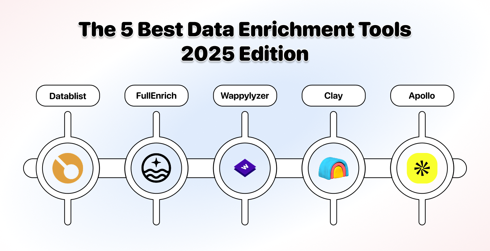
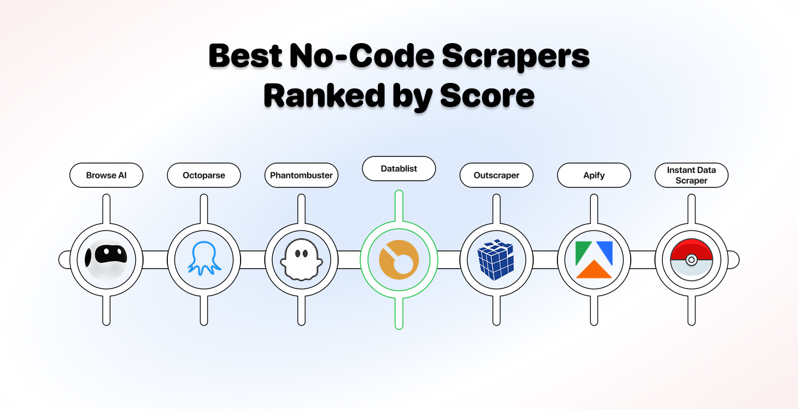
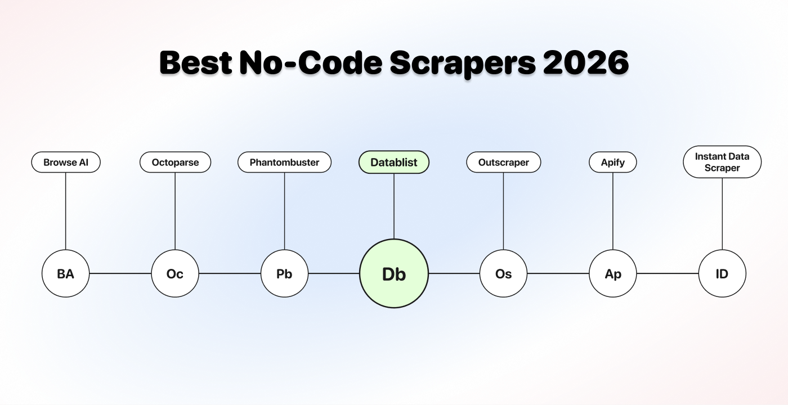
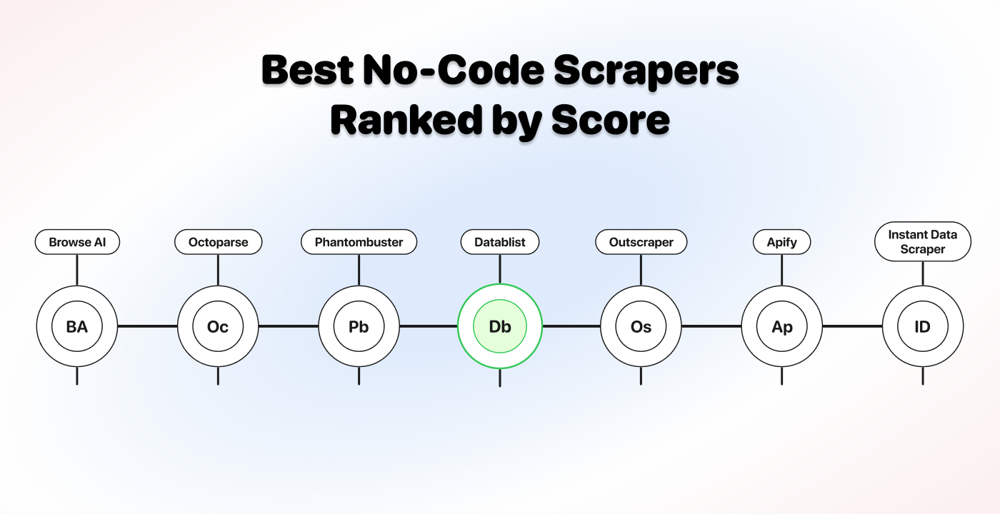
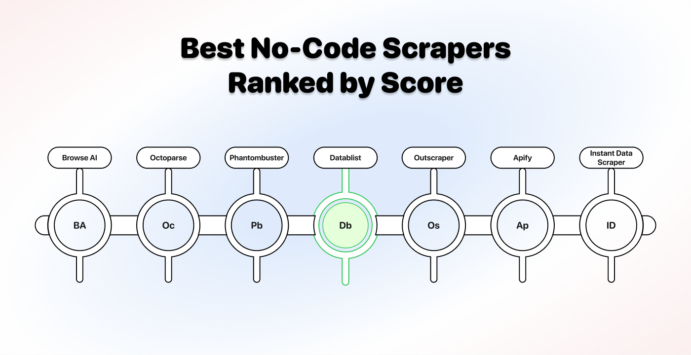
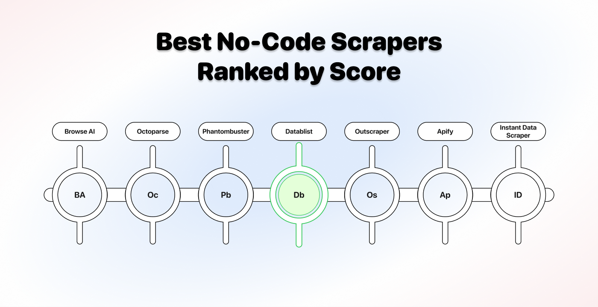

The new datablist.com
Rebuilt the homepage and redesigned the whole site in 16 languages: 43 page templates, a comparison hub, a workflows catalog and llms.txt for AI search. Four pull requests merged in two weeks.
I'm the growth co-founder at Datablist, a B2B data enrichment SaaS with 30,000+ users. I ship the website, SEO, pricing, lifecycle emails and outbound myself, and I built the AI agents that do the volume. Four years ago I sold face to face and didn't own a computer.
Rebuilt the homepage and redesigned the whole site in 16 languages: 43 page templates, a comparison hub, a workflows catalog and llms.txt for AI search. Four pull requests merged in two weeks.
Wrote 118 of the 167 bylined guides on the site, then built the system that plans, briefs and drafts the next ones, with a registry that stops two articles from competing for the same search.
Free tools that catch people at the moment they need data (domain finder, email finder, company name cleaner), plus a page system for 44 enrichments and 13 APIs, each with live samples and a cost calculator.
Ran the pricing redesign: diagnosis, prototypes, plans, credit add-ons and top-up ladders, priced against what competitors charge per result. Then wrote the email tracks that move legacy subscribers to the new plans and win back cancelled ones.
23 lifecycle emails on 13 behavior cohorts, synced from Mixpanel to Brevo, with a 10% holdout group so the lift can be measured instead of assumed.
Turned a heavy self-serve customer into a 12-month contract: pulled their real usage, built two pricing paths, wrote the proposal and the order form, and invoiced it.
A cold email test to Clay users got a 10% reply rate on 400 sends. I run the whole stack myself: sending domains, warm-up, Smartlead, reply alerts and an AI step that picks the right person at each company.
The setup that lets Claude, Codex, Gemini and Grok work on the same 50+ projects without overwriting each other: versioned folders, briefs, feedback logs and shared skills. Open-sourced.
Scenarios that turn a content idea into a keyword list with search volume, analyze Google results and AI Overviews, and keep Notion in sync. Public blueprints you can open.
Revenue had stopped growing and the obvious answer was "get more signups". Before spending on that, I joined billing, product analytics and search data to see where customers were actually lost.
Datablist needed a new brand and a site that also works for AI search. There was no web team, so I directed AI coding agents, reviewed every page myself and sent the work as pull requests to my co-founder.
After writing most of the site's guides by hand, I turned the process into a pipeline: four specialized agents that research, brief, outline and draft, each checked by an independent verifier.
Ads, covers and social graphics need a designer, and I didn't have one. So I wrote the brand guidelines as explicit rules (color logic, line weight, composition, layout by asset type) and iterated with the model until it matched the reference. The target on the left, the result on the right, and the honest trail of attempts underneath.

Reference
Result ✓
01
02
03
04Joined in summer 2024 as a growth contractor through my agency and became co-founder in January 2025. B2B data enrichment SaaS with 30,000+ users and a tiny team: I own everything between the product and the customer, from website, SEO and pricing to lifecycle, outbound, demos and enterprise deals.
Automated outbound for startups, paid per booked meeting. Ran it on Notion, Make.com and GPT. This agency is how I ended up at Datablist.
B2B scrap trading, built on face-to-face sales. Grew to €84k a month in revenue (about $100k) at a 17.8% net margin, with a warehouse, a driver and 6 commission-based sellers I recruited. Sold it in March 2024.
I build the growth stack myself: pages, tools, tracking, syncs and automations. No ticket to a dev team needed to test an idea.
Content that ranks and gets cited: guides, comparison pages, programmatic pages and llms.txt, planned so articles don't compete with each other.
Plans, credit ladders and migrations, priced from real usage and from what competitors charge per result.
Cohorts, onboarding emails and win-back flows, with holdout groups so the result is measured, not guessed.
Lists, infrastructure, copy and follow-up, plus demos and enterprise proposals. I came from face-to-face sales.
Multi-agent pipelines with written rules and independent verifiers, so one person gets the output of a team.
More traffic into a leaking funnel is wasted money. I look at where customers drop before I spend on getting more.
If an idea needs a page, a tool or an email, I build it the same week and test it, instead of writing a spec and waiting.
AI does the repetitive work, and I make the calls. The skill is deciding where that line sits.
I try to break my findings before I present them. My best catch so far: a "bad cohort" that was only a short month.